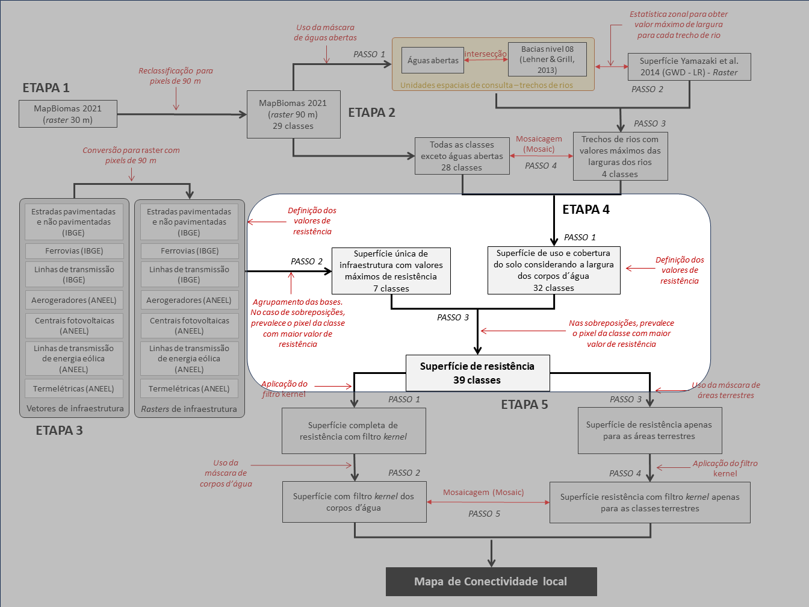

Valores de resistência e combinação das bases de dados
A atribuição dos valores de resistência para cada classe de uso e cobertura do solo e a combinação das diferentes bases de dados corresponde à Etapa 4 da análise conectividade local (Figura 1).

Os valores de resistência para cada classe de uso e cobertura do solo foram atribuídos, por bioma, pela equipe do projeto e por especialistas. Esses valores variaram de 1 a 20 em números inteiros, sendo 1 o valor de menor resistência e 20 o de maior resistência.
Passo 1
Iniciamos a atribuição dos valores de resistência na camada de uso e cobertura do solo do MapBiomas reamostrada na resolução de 90 m, conforme valores apresentados na Tabela 1.
| N | Classe de cobertura do solo | Amazônia | Caatinga | Cerrado | Mata Atlântica | Pampa | Pantanal |
|---|---|---|---|---|---|---|---|
| 1 | Afloramento rochoso | 3 | 1 | 2 | 3 | 2 | - |
| 2 | Algodão | 7 | 7 | 10 | - | - | - |
| 3 | Aquacultura | - | 10 | 7 | 7 | 7 | - |
| 4 | Área urbana | 20 | 20 | 20 | 20 | 20 | 20 |
| 5 | Áreas alagadas (Campos e Pântanos) | 1 | - | 1 | 2 | 1 | 1 |
| 6 | Arroz | - | - | 10 | 10 | 10 | - |
| 7 | Café | - | 7 | 10 | 4 | - | - |
| 8 | Cana de açúcar | 15 | 10 | 10 | 10 | - | 10 |
| 9 | Citrus | - | - | 10 | 4 | - | - |
| 10 | Dendê | 10 | - | - | - | - | - |
| 11 | Floresta alagada | 1 | - | - | - | - | - |
| 12 | Formação campestre (campos) | 1 | 1 | 1 | 2 | 1 | 1 |
| 13 | Formação de savana | 1 | 1 | 1 | 2 | - | 1 |
| 14 | Formação florestal | 1 | 1 | 1 | 1 | 1 | 1 |
| 15 | Mangue | 1 | 1 | 1 | 1 | - | - |
| 16 | Mineração | 20 | 20 | 20 | 20 | 20 | 20 |
| 17 | Mosaico de usos | 10 | 7 | 10 | 10 | 10 | 7 |
| 18 | Outras áreas não vegetadas | 10 | 10 | 10 | 10 | 10 | 10 |
| 19 | Outras culturas perenes | 10 | 7 | 7 | 4 | - | - |
| 20 | Outras culturas temporárias | 15 | 7 | 10 | 10 | 10 | 5 |
| 21 | Outras formações não florestais | - | 7 | - | 2 | - | - |
| 22 | Pastagem | 17 | 7 | 7 | 9 | 7 | 7 |
| 23 | Praia, duna e areal | 2 | 2 | 2 | 2 | 2 | 2 |
| 24 | Salina (Apicum) | 2 | 1 | 2 | 2 | - | - |
| 25 | Silvicultura (floresta plantada) | 7 | 2 | 7 | 3 | 10 | 5 |
| 26 | Soja | 17 | 10 | 10 | 10 | 10 | 10 |
| 27 | Vegetação de restinga arbórea | - | 1 | - | 1 | 1 | - |
| 28 | Vegetação de restinga herbácea | - | 1 | - | 2 | 1 | - |
Passo 2
A esse conjunto de dados, acrescentamos uma coluna na tabela de atributos, com as 4 classes de largura dos corpos d’água, conforme valores apresentados na Tabela 2.
| N | Classe de cobertura do solo | Amazônia | Caatinga | Cerrado | Mata Atlântica | Pampa | Pantanal |
|---|---|---|---|---|---|---|---|
| 29 | Corpos d’águas abertas até 250 m | 2 | 2 | 2 | 2 | 2 | 2 |
| 30 | Corpos d’águas abertas de 250 a 1.000 m | 5 | 5 | 5 | 5 | 5 | 5 |
| 31 | Corpos d’águas abertas de 1.000 a 4.000 m | 10 | 10 | 10 | 10 | 10 | 10 |
| 32 | Corpos d’águas abertas acima de 4.000 m | 12 | 12 | 12 | 12 | 12 | 12 |
Passo 3
As camadas raster geradas para as bases de dados de infraestrutura de transporte e de energia receberam valores de resistência como atributo específico, conforme indicado na Tabela 3.
| N | Classe de cobertura do solo | Amazônia | Caatinga | Cerrado | Mata Atlântica | Pampa | Pantanal |
|---|---|---|---|---|---|---|---|
| 33 | Aerogeradores | 15 | 15 | 15 | 15 | 15 | 15 |
| 34 | Centrais geradoras de energia solar | 15 | 17 | 17 | 17 | 17 | 17 |
| 35 | Estradas não pavimentadas | 10 | 10 | 7 | 10 | 7 | 3 |
| 36 | Estradas pavimentadas | 20 | 20 | 20 | 20 | 20 | 20 |
| 37 | Ferrovias | 10 | 10 | 10 | 10 | 10 | 10 |
| 38 | Linhas de transmissão (tradicionais e anexas ao sistema eólico) | 10 | 7 | 7 | 7 | 7 | 7 |
| 39 | Termelétricas | 20 | 20 | 20 | 20 | 20 | 20 |
Em seguida, todas as camadas foram agrupadas em um único arquivo matricial. Para realizar esse agrupamento, usamos a ferramenta Cell Statistics, informando, no campo overlay satatistic, que o resultado do agrupamento deve considerar o valor máximo do pixel (Figura 2). Essa indicação é importante para que, na sobreposição das várias camadas de infraestrutura, prevaleça sempre o valor de pixel com resistência mais alta.

Cell Statistics”, no ArcGis 10.5, para agrupar as bases de infraestrutura em uma única superfície, onde prevalecem os valores máximos de resistência atribuídos a cada classe.Por fim, a essa camada com os valores de resistência para classes de infraestrutura de transporte e de energia, combinamos o resultado à camada anterior (descrita no Passo 2). Usando novamente a ferramenta Cell Statistics conjugamos as bases matriciais de infraestrutura de transporte e de energia indicadas acima com a camada de uso e cobertura do solo combinada com as classes de corpos d’água (descrita no Passo 2). Da mesma forma como conduzido anteriormente, no agrupamento das camadas de infraestrutura de transporte e de energia, durante a sobreposição, prevaleceu sempre o maior valor de resistência: no campo overlay satatistic o resultado do agrupamento deve considerar o valor máximo do pixel (Figura 3).

Feita esta operação, obtivemos uma nova superfície matricial (raster), combinando todas as classes listadas aqui. O mapa consolidado dos valores de resistência para cada uso e cobertura do solo Figura 4, combinando as classes de largura dos corpos d’água e as classes de infraestrutura de transporte e de energia, totalizou 39 classes Tabela 4.

| N | Classe de cobertura do solo | Amazônia | Caatinga | Cerrado | Mata Atlântica | Pampa | Pantanal |
|---|---|---|---|---|---|---|---|
| 1 | Afloramento rochoso | 3 | 1 | 2 | 3 | 2 | - |
| 2 | Algodão | 7 | 7 | 10 | - | - | - |
| 3 | Aquacultura | - | 10 | 7 | 7 | 7 | - |
| 4 | Área urbana | 20 | 20 | 20 | 20 | 20 | 20 |
| 5 | Áreas alagadas (Campos e Pântanos) | 1 | - | 1 | 2 | 1 | 1 |
| 6 | Arroz | - | - | 10 | 10 | 10 | - |
| 7 | Café | - | 7 | 10 | 4 | - | - |
| 8 | Cana de açúcar | 15 | 10 | 10 | 10 | - | 10 |
| 9 | Citrus | - | - | 10 | 4 | - | - |
| 10 | Dendê | 10 | - | - | - | - | - |
| 11 | Floresta alagada | 1 | - | - | - | - | - |
| 12 | Formação campestre (campos) | 1 | 1 | 1 | 2 | 1 | 1 |
| 13 | Formação de savana | 1 | 1 | 1 | 2 | - | 1 |
| 14 | Formação florestal | 1 | 1 | 1 | 1 | 1 | 1 |
| 15 | Mangue | 1 | 1 | 1 | 1 | - | - |
| 16 | Mineração | 20 | 20 | 20 | 20 | 20 | 20 |
| 17 | Mosaico de usos | 10 | 7 | 10 | 10 | 10 | 7 |
| 18 | Outras áreas não vegetadas | 10 | 10 | 10 | 10 | 10 | 10 |
| 19 | Outras culturas perenes | 10 | 7 | 7 | 4 | - | - |
| 20 | Outras culturas temporárias | 15 | 7 | 10 | 10 | 10 | 5 |
| 21 | Outras formações não florestais | - | 7 | - | 2 | - | - |
| 22 | Pastagem | 17 | 7 | 7 | 9 | 7 | 7 |
| 23 | Praia, duna e areal | 2 | 2 | 2 | 2 | 2 | 2 |
| 24 | Salina (Apicum) | 2 | 1 | 2 | 2 | - | - |
| 25 | Silvicultura (floresta plantada) | 7 | 2 | 7 | 3 | 10 | 5 |
| 26 | Soja | 17 | 10 | 10 | 10 | 10 | 10 |
| 27 | Vegetação de restinga arbórea | - | 1 | - | 1 | 1 | - |
| 28 | Vegetação de restinga herbácea | - | 1 | - | 2 | 1 | - |
| 29 | Corpos d’águas abertas até 250 m | 2 | 2 | 2 | 2 | 2 | 2 |
| 30 | Corpos d’águas abertas de 250 a 1000 m | 5 | 5 | 5 | 5 | 5 | 5 |
| 31 | Corpos d’águas abertas de 1000 a 4000 m | 10 | 10 | 10 | 10 | 10 | 10 |
| 32 | Corpos d’águas abertas acima de 4000 m | 12 | 12 | 12 | 12 | 12 | 12 |
| 33 | Aerogeradores | 15 | 15 | 15 | 15 | 15 | 15 |
| 34 | Centrais geradoras de energia solar | 15 | 17 | 17 | 17 | 17 | 17 |
| 35 | Estradas não pavimentadas | 10 | 10 | 7 | 10 | 7 | 3 |
| 36 | Estradas pavimentadas | 20 | 20 | 20 | 20 | 20 | 20 |
| 37 | Ferrovias | 10 | 10 | 10 | 10 | 10 | 10 |
| 38 | Linhas de transmissão (tradicionais e anexas ao sistema eólico) | 10 | 7 | 7 | 7 | 7 | 7 |
| 39 | Termelétricas | 20 | 20 | 20 | 20 | 20 | 20 |